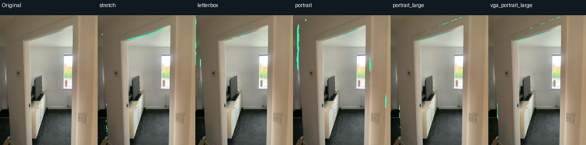
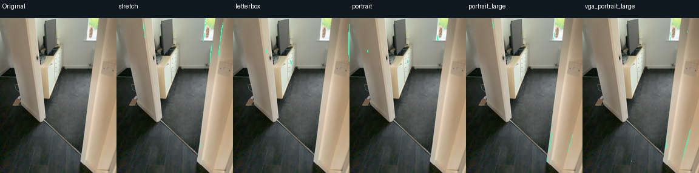
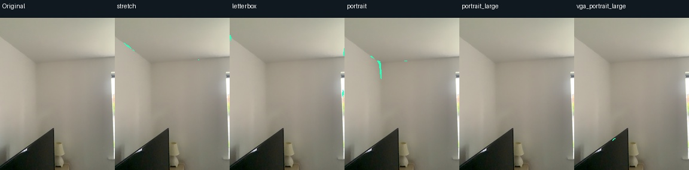
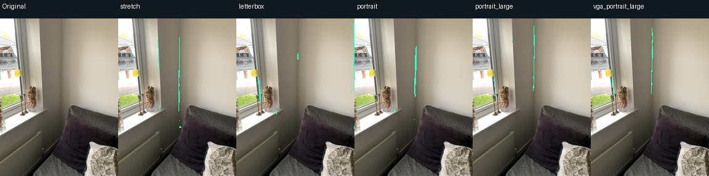
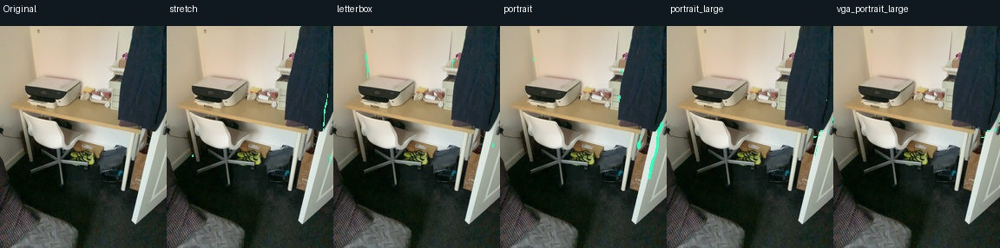
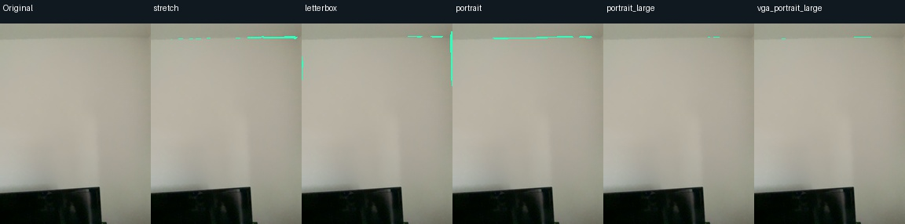
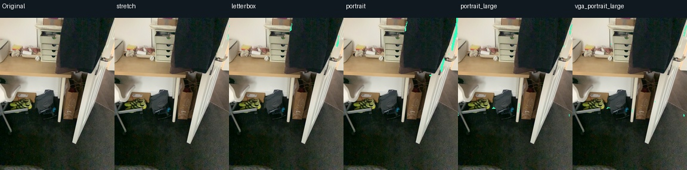
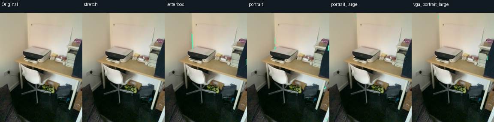

Can better camera preprocessing recover real structural edges?
We kept the synthetic-trained model and threshold fixed, and compared five input strategies on 240 ARKitScenes views. The 640 × 480 wide-camera stream provided 121 exact timestamp matches. All overlays use the same upright 192 × 256 image coordinates.
Columns: original RGB, stretched input, letterboxed input, native portrait, larger portrait from low-resolution RGB, and larger portrait from VGA RGB. Green marks predicted visible structural edges. All eight illustrated views are evenly spaced among the matched frames.
Result: mixed, still incomplete. Preserving aspect ratio changes which edges are recovered, but substantial wall and opening boundaries remain missing. Higher resolution does not consistently fix this. No default was changed. These comparisons do not establish improved accuracy.








Efficiency and evaluation limits
The complete cached comparison took 41.47 seconds with 172.15 MiB peak allocated tensor memory. Download time is excluded. Individual timings are fixed-order diagnostics, not an isolated speedup benchmark.
Eight local review frames have provisional AI-drafted region annotations. Independent human review remains pending; no real structural-edge F1 is reported and no real-data fine-tuning has been performed. All views belong to one development visit, not a held-out generalization test. Surface reconstruction F1 from the earlier experiment is a different metric.
Measurements and artifact hashes · Dataset license